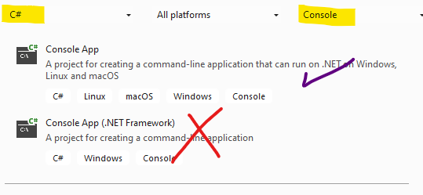

In this lab, we will create a console application and a simple class and test code
| Exercise Folder | FirstLab |
| Builds On | None |
| Time to complete | 20 minutes |
| In this lab, we will create a console application and a simple class and test code |
|---|
| 1. Open Visual Studio Community 2022 and choose Create new Project 1. In the filters, choose C# and Console  1. Choose a Console application (note - there are 2 project types. .Net Core has multiple platforms while .Net framework is Windows only. Choose .Net Core projects) 1. Name your project FirstLab 1. Change the name of the solution to Labs 1. Change the location of the project to whatever folder works best 1. Right-click on the new project in the Solution Explorer and choose Add/Class 1. Name the class Employee |
In this lab, we demonstrate string literals.
| Exercise Folder | LiteralStrings |
| Builds On | FirstLab |
| Time to complete | 10 minutes |
| Exercise Folder | Tuple |
| Builds On | None |
| Time to complete | 30 minutes |
| ## Instructions |
|---|
| ### Formulas |
To get K from C, add 273.15 to the C value To get F from C, F = (C x 9/5) + 32 To get C from F, C = (F-32) X 5/9 |
| # Records ## Overview This lab demonstrates the record type specifier. |
| | | | | ——— | ————————— | | Exercise Folder | Records | | Builds On | Tuple | | Time to complete | 10 minutes |
| Building on the Tuples lab, define a single record type to use for the result of each temperature conversion function. # Deconstruction ## Overview In this lab, add deconstructors to the Employee class. |
| | | | | ——— | ————————— | | Exercise Folder | Deconstruction | | Builds On | LiteralStrings | | Time to complete | 30 minutes |
| ## Steps 1. Add the following deconstructors to the Employee class. |
c# public void Deconstruct (out string FullName, out double Salary, out double YtdGross ) public void Deconstruct(out string FirstName, out string LastName, out double Salary, out double YtdGross, out DateTime HireDate)
2. Update Program.cs to verify the deconstructors# xUnit Intro
## Overview In this lab, we get started with xUnit. Using TDD process,
we will define some new capabilities in the Employee
class. |
| | | | | ——— | ————————— | | Exercise Folder | xUnitIntro | | Builds On | Deconstruction | | Time to complete | 40 minutes |
We want to define a new property in the Employee class
Tenure - a read-only int property that calculates the number of years the employee has been employed
Update the Pay() method as follows:
[Theory]
[InlineData(6, 100.0, 94.2)]
[InlineData(0, 100.0, 92.35)]
[InlineData(3, 200.0, 184.7)]
public void TestPay(int tenure, double sal, double pay)
{In this lab, we will specify boundaries on the Employee properties and behaviors by specifying expected exceptions. This lab builds on the xUnit lab.
| Exercise Folder | Exceptions |
| Builds On | xUnitIntro |
| Time to complete | 30 minutes |
| Exercise Folder | Generics |
| Builds On | None |
| Time to complete | 20 minutes |
| Exercise Folder | Delegates |
| Builds On | Exceptions |
| Time to complete | 30 minutes |
Our customer has identified an additional requirement (imagine that!).
Some employees are in regions (state, province or city) that imposes an additional income tax.
In order to handle this scenario, the designer decided to add a delegate to the Employee class that can be called to obtain the additional local tax.
The signature of the delegate is
double func(double amt). The gross amount being paid is
passed in and the local tax is returned.
Here’s what you need to do for this lab: - Use this project as a starting point, or build on Exceptions - Add the tests below to EmployeeTest - Add a delegate definition to Employee.cs that returns a double and accepts a double as an argument - Add a property to Employee.cs named LocalTaxMethod that is of the delegate type - In Pay(amt), modify so that if there is a LocalTaxMethod, it is called and its result is added to the tax
[Fact]
public void NullLocalTaxTest()
{
var e = new Employee("Hank", "Hill", 100, DateTime.Now.AddYears(-5).AddDays(-10));
e.LocalTaxMethod = null;
e.Pay();
}
[Fact]
public void LocalTaxCalledTest()
{
var e = new Employee("Hank", "Hill", 100, DateTime.Now.AddYears(-5).AddDays(-10));
bool called = false;
e.LocalTaxMethod = (amt) => { called = true; return 0; };
e.Pay();
Assert.True(called);
}
[Fact]
public void LocalTaxAddedTest()
{
var e = new Employee("Hank", "Hill", 100, DateTime.Now.AddYears(-5).AddDays(-10));
var nt = e.Pay();
e.LocalTaxMethod = (amt) => 10;
Assert.Equal(nt - 10, e.Pay(), 2);
}In this lab, we will add an event to the Employee class. This lab builds on the Delegate lab.
| Exercise Folder | Events |
| Builds On | Delegates |
| Time to complete | 30 minutes |
void NotifyPay(Employee emp, double net)Convert private delegate methods into lambdas.
| Exercise Folder | Lambda |
| Builds On | Events |
| Time to complete | 10 minutes |
| Exercise Folder | MoqLab |
| Builds On | Lambda |
| Time to complete | 30 minutes |
The initial Company class is shown below:
public class Company
{
public Company(string name, string taxId)
{
throw new NotImplementedException();
}
public string Name { get; set; }
public string TaxId { get; set; }
public GenericArrayList<IEmployee> Employees { get; set; }
public void Hire(IEmployee emp)
{
throw new NotImplementedException();
}
public double Pay()
{
throw new NotImplementedException();
}
}In this lab, we will expand the types of people that can be hired, including contractors and interns. ## Builds On - Moqlab
In this lab, we eliminate the fat-interface smell with Company’s dependency on HumanResource. We will also implement the Composite Pattern ## Builds On - Inheritance ## Overview Determine Company’s dependency and design an interface that contains the exact methods/properties required by company. Replace Company’s dependency on HumanResource with the new interface type.
Also, we will allow companies to be nested within companies.
The composite pattern is an elegant pattern that will greatly increase the functionality of our application. How can we adjust the design so that companies can contain companies?# Extension Methods In this lab, we create an extension to the string class. ## Builds On - Interfaces ## Overview The Java string class has a cool method named Matches This method takes a regular expression as a parameter and returns a true if the string matches the expression and false if it doesn’t.
Let’s take that a step further and add a method to the string class to Validate a string with a regular expression.
Add a class to the Interfaces project named
Extensions. Change the class to public static
Define a static bool extension method named Validate. The first
this argument is a string (extending string class) and
the second is a regular expression. If the string doesn’t start with a ^
and/or end with a $, add them. Return true if this string matches the
regex or false if it doesn’t
Update the validation methods in HumanResource to use the extension method.
In this lab, we will experiment with Linq queries on a database of movies.
The project contains a file MoviesJson.txt that contains
JSON encoded movie data.
Each line in the file contains a movie title, genre, year, rating, and
cast. Review the file MovieDb.cs. This class deserializes the
data into a list of Movie objects. > Note - the properties
of MoviesJson.txt are set to copy the file to the output folder
so that it is in the same directory as the application .exe.
In the top-level statements (Program.cs) experiment with queries
Modify your code from the previous lab to use Linq Query ## Builds on Linq API # Attributes & Reflection In this lab, we will define an attribute and create a tool that extracts information from assemblies
Here is a hint of the documentor class:
public class AuthorDocumenter
{
public AuthorDocumenter(string assemblyPath)
{
AssemblyPath = assemblyPath;
}
public string AssemblyPath { get; set; }
public void Scan()
{
var assembly = System.Runtime
.Loader
.AssemblyLoadContext.Default
.LoadFromAssemblyPath(AssemblyPath);
var types = assembly.GetTypes()
.Where(t => t.IsDefined(typeof(AuthorAttribute)));
foreach (var t in types)
{
...Run the documenter, passing the assembly name of the project containing attributes. # Collections In this lab, we will replace our GenericArrayList with a standard library class.
New requirement - we want to prevent duplicate hires - Create a new test to specify that if the same employee is hired more than once, only one will be hired - do this for the same object (reference) and for different, equal employees - note - we don’t need to test .Net collections, but we do want to specify that the payables are compatible with hash sets and sorted sets